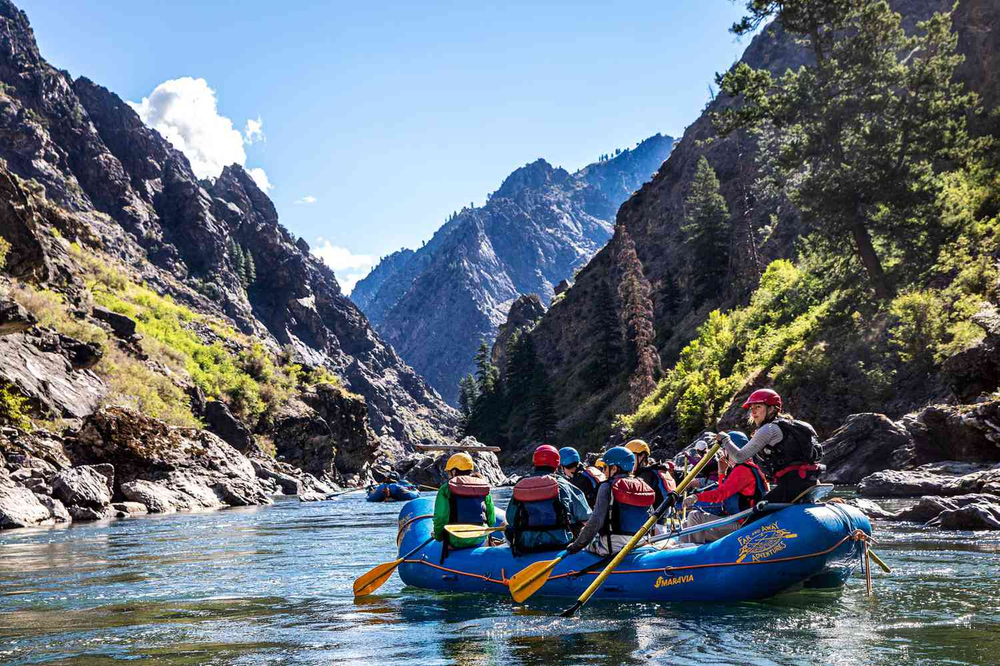

Have An Adventure
Make Memories with Dry Oar

White River is a river, approximately 195 miles (314 km) long, in the U.S. states of Colorado and Utah and is a tributary of the Green River (which flows into the Colorado River). The river rises in two forks in northwestern Colorado in northeastern Garfield County in the Flat Tops Wilderness Area in the White River National Forest. The North Fork rises in Wall Lake and flows northwest, then southwest. The South Fork rises ten miles south of the north, flows southwest, then northwest, past Spring Cave.